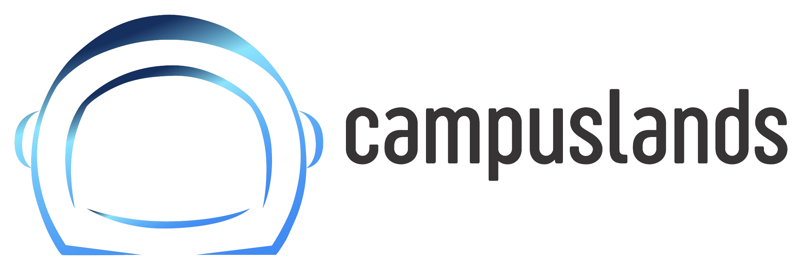
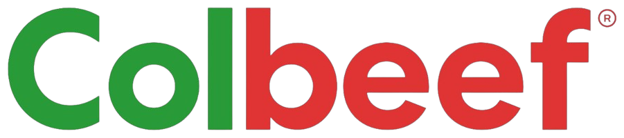

Confidencial
Plan de Trabajo y Acuerdos de Nivel de Servicio (SLA)
Desarrollo, implementación y despliegue de una solución de software a la medida para los procesos operativos de Colbeef, articulada en cinco frentes que se integran con Informatix, el software existente de la compañía.
Procesamiento automático de recepción, lectura de PDF, OCR de pesaje y planillaje digital inteligente.
Gestión automatizada de cava con consulta de inventario en tiempo real vía Informatix.
Entrenamiento y ajuste continuo del aprendizaje, parámetros y comportamiento del agente.
Dashboards ejecutivos en tiempo real, eficiencia operativa, trazabilidad y seguimiento de clientes.
Integración con el sistema existente para automatizar el proceso de facturación desde el agente.
Reconocimiento de procesos en planta, entrevista con operarios y validación de los puntos de captura de datos.
Tecnologías modernas de código abierto y estándares de la industria, desplegadas sobre infraestructura en la nube y con trazabilidad de avance en tiempo real.
Vue.js — interfaz de usuario reactiva y moderna.
Node.js / PHP · Laravel / TypeScript.
MariaDB — integridad y rendimiento operativo.
AWS — despliegue en nube, disponible y escalable.
Taskman centraliza el reporte de horas y avance de tareas; Colbeef recibe usuario y contraseña propios para seguimiento de Sprints y Roadmaps.
Lidera la visión del producto, toma de requerimientos y priorización del backlog bajo Scrum.
Estructura el proyecto, gestiona la base de datos y garantiza buenas prácticas y escalabilidad.
Prototipo navegable en Xd; conserva la integridad del diseño frente a la implementación real.
Construye la interfaz web fiel al prototipo, preparando el terreno para el Backend.
Desarrolla la lógica de negocio y garantiza rendimiento e integridad de los datos.
Diseña el razonamiento del agente, gestión de memoria y ejecución segura de herramientas (tool calling).
Gestiona servidores y ambientes controlados; despliegues de prueba y en servidores locales de MPI.
Revisión exhaustiva de funcionalidad, identificando errores antes de la entrega al usuario final.
Capacita y entrega cada funcionalidad, mostrando el paso a paso de su uso.
Cronograma macro; las actividades puntuales y módulos específicos se afinan con la toma de requerimientos posterior a la Fase de Levantamiento. La numeración de fases corresponde a la del Plan de Trabajo firmado.
Flujo conversacional, OCR de pesaje e integración con Informatix.
9 semanasInventario en tiempo real integrado con Informatix.
4 semanasAjuste de parámetros, comportamiento y procesamiento de datos.
5 semanasDashboards ejecutivos, eficiencia operativa y trazabilidad.
4 semanasIntegración con el sistema existente para facturar desde el agente.
5 semanasLa fase de mayor peso del proyecto — 9 semanas — sienta las bases del ecosistema conversacional y OCR sobre el que se apoyan las fases siguientes.
Diseño UX/UI y construcción de la información a consultar en Informatix.
Flujo conversacional, lectura de archivos PDF e integración OCR de pesaje y planillaje digital.
Pruebas de calidad y ajustes según retroalimentación del usuario.
Puesta en producción y capacitación al equipo de Colbeef.
Maqueta UX/UI validada antes de cada etapa de desarrollo.
Software operativo al cierre de cada fase de desarrollo.
Sesiones virtuales y presenciales, acordadas entre ambos equipos.
Material de apoyo para consulta y entrenamiento continuo.
Código documentado con manuales técnicos y funcionales, al finalizar.
Del entorno de pruebas, en horario laboral.
Tiempo de respuesta a errores críticos.
Tiempo de respuesta a consultas del equipo Colbeef.
Reporte de horas y avance de tareas mediante Taskman, con usuario y contraseña propios para Colbeef sobre Sprints y Roadmaps de gestión.
Vía Google Meet o Teams, con reporte de avance conjunto.
Grupo "Proyecto IA Colbeef - Campuslands" para alertas y coordinación de visitas.
Información financiera y confidencial vía diego.serrano@campuslands.com.
Definido en mesas de trabajo entre el PO de Colbeef y el PM de Campuslands.
Toda modificación al alcance se solicita por escrito y se aprueba por ambos directores.